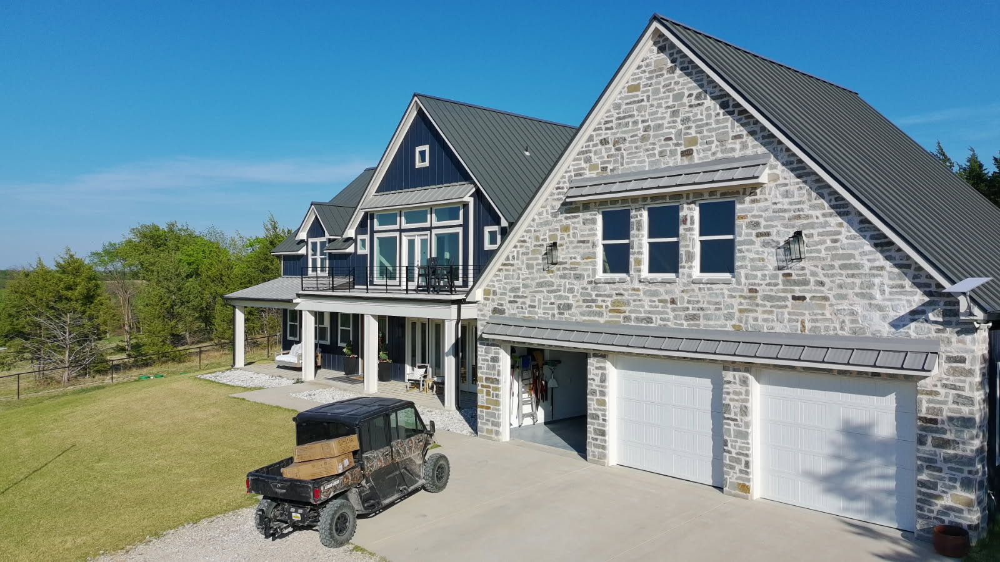
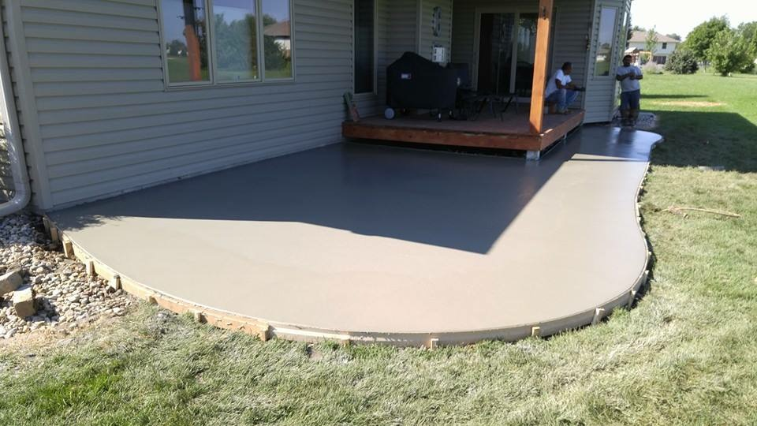

Service Areas
Across DFW
One team, every trade, across the Dallas–Fort Worth metroplex. Select your city for local service details.

Dallas
Dallas County — roofing, remodeling, concrete, and full-service construction for Dallas homeowners.
View Service Area →
Fort Worth
Tarrant County — roofing, remodeling, concrete, and full-service construction for Fort Worth homeowners.
View Service Area →
Plano
Collin County — roofing, remodeling, concrete, and full-service construction for Plano homeowners.
View Service Area →
Allen
Collin County — roofing, remodeling, concrete, and full-service construction for Allen homeowners.
View Service Area →
McKinney
Collin County — roofing, remodeling, concrete, and full-service construction for McKinney homeowners.
View Service Area →
Frisco
Collin & Denton Counties — roofing, remodeling, concrete, and full-service construction for Frisco homeowners.
View Service Area →
Arlington
Tarrant County — roofing, remodeling, concrete, and full-service construction for Arlington homeowners.
View Service Area →
DeSoto
Dallas County — roofing, remodeling, concrete, and full-service construction for DeSoto homeowners.
View Service Area →
Irving
Dallas County — roofing, remodeling, concrete, and full-service construction for Irving homeowners.
View Service Area →
Coppell
Dallas County — roofing, remodeling, concrete, and full-service construction for Coppell homeowners.
View Service Area →Garland
Dallas County — roofing, remodeling, concrete, and full-service construction for Garland homeowners.
View Service Area →
Denton
Denton County — roofing, remodeling, concrete, and full-service construction for Denton homeowners.
View Service Area →
Southlake
Tarrant & Denton Counties — roofing, remodeling, concrete, and full-service construction for Southlake homeowners.
View Service Area →
Highland Village, Argyle & Flower Mound
Denton County — roofing, remodeling, concrete, and full-service construction for Highland Village, Argyle & Flower Mound homeowners.
View Service Area →